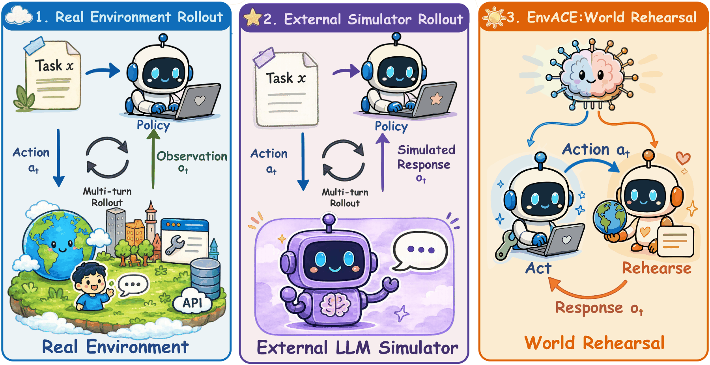

Abstract
arXiv 2608.06197
Training large language model agents for long-horizon tool use typically relies on interactions with real or synthesized executable environments, whose construction and verification are costly, or on external simulators that are difficult to ground. We introduce EnvACE, an agentic reinforcement learning method that replaces external environment interaction during training with world rehearsal. The policy alternates between acting and rehearsal: it first generates a tool call, then plays the role of the environment to produce the response induced by that action, and conditions subsequent decisions on the rehearsed response. Both roles are jointly optimized end-to-end using task-success rewards.
Through world rehearsal, the policy internalizes the relationship between actions and their environment responses in its parameters, yielding an agent world model that directly supports decision making. Across BFCL-v4, τ²-Bench, VitaBench, and FinMCP-Bench, EnvACE achieves strong and transferable performance, outperforming environment-scaling baselines in the overall evaluation. Controlled studies further show that world rehearsal consistently improves policy learning across model scales. At test time, the internalized world model enables private rehearsal before committed execution, yielding further gains under a moderate rehearsal budget without additional external interaction.
Three ways to close the loop
Where the response comes from
Every multi-turn rollout needs an environment response after each action. What differs is who produces it — and what that costs.
Real environment
The agent acts on a live system; the system returns the observation. Grounded, but every task needs a built and verified executable environment.
cost: environment engineeringExternal simulator
A separate LLM stands in for the environment. Cheap to spin up, but its responses are hard to ground and it is never trained by the task reward.
cost: ungrounded responsesWorld rehearsal
The acting policy itself produces the response, then conditions on it. No external call in the loop, and the reward trains the dynamics along with the actions.
cost: none outside the policy
One policy, two roles
Method
The same parameters play both sides of the interaction, alternating turn by turn.
Generate the action
Conditioned on the interaction history, the policy emits the next tool call — the same thing it will emit at deployment, against a real environment.
Generate the response
The policy then plays the environment and produces the response that action induces. The next decision is conditioned on its own rehearsed response.
Role-wise GRPO. Both roles share parameters but get a separate advantage baseline, and are optimized jointly end-to-end from the task-success reward. Nothing supervises the rehearsed responses directly — the dynamics are learned because acting on bad dynamics loses reward.
Against environment-scaling baselines
Results
Per-benchmark averages and the overall mean across the three general agentic benchmarks. All comparisons at open-source 7–14B scale.
| Method | BFCL V4 | τ²-Bench | VitaBench | Overall |
|---|---|---|---|---|
| Backbones | ||||
| Qwen3-1.7B | 30.89 | 10.4 | 1.9 | 14.41 |
| Qwen3-4B | 41.80 | 27.9 | 9.6 | 26.43 |
| Qwen3-8B | 44.04 | 30.0 | 11.4 | 28.48 |
| Environment-scaling baselines | ||||
| Simulator-8B | 19.78 | 38.5 | 1.8 | 20.03 |
| TOUCAN-7B | 35.33 | 22.4 | 2.8 | 20.18 |
| AWM-8B | 44.29 | 31.2 | 10.2 | 28.56 |
| AWM-14B | 47.32 | 30.7 | 19.6 | 32.54 |
| EnvScaler-8B | 47.07 | 32.9 | 15.8 | 31.92 |
| ScaleEnv-8B | – | 38.5 | 15.0 | – |
| Ours | ||||
| EnvACE-1.7B | 31.81 | 15.3 | 3.2 | 16.77 |
| EnvACE-8B | 46.04 | 36.7 | 16.0 | 32.91 |
EnvACE-8B takes the best overall score without ever calling an environment during training, and the 1.7B run shows the same lift at a scale where the backbone barely holds a multi-turn trajectory together (14.41 → 16.77).
Rehearse privately, then commit
Test-time scaling
The world model learned during training is also usable at inference. Run N imagined trajectories, condense them into a rehearsal memory, then spend a single execution in the real environment.
N independent attempts
Rehearsals are drawn independently and summarized together. Best overall gain: 36.7 → 40.9.
Each attempt sees the last
Every rehearsal is conditioned on prior attempts and their revisions. 36.7 → 38.5.
| Setting | τ²-Bench | BFCL multi-turn | Overall | Δ |
|---|---|---|---|---|
| No test-time scaling | 31.4 | 41.9 | 36.7 | — |
| Parallel — base policy | 32.2 | 41.4 | 36.8 | +0.1 |
| Parallel — EnvACE rehearsal | 38.0 | 43.9 | 40.9 | +4.2 |
| Sequential — base policy | 31.0 | 38.8 | 34.9 | −1.8 |
| Sequential — EnvACE rehearsal | 34.8 | 42.3 | 38.5 | +2.4 |
The base policy gets nothing from the same procedure — parallel is flat and sequential is actively worse. The gain is not the sampling budget; it is having a world model worth rehearsing with.
BibTeX
@article{envace2026,
title = {EnvACE: Internalizing Environment Dynamics via World Rehearsal
for Agentic Reinforcement Learning},
author = {Xu, Zishan and Yao, Zhiyuan and Chen, Yuxin and Guo, Yifu and
Lu, Zhengxi and Lu, Yuquan and Huang, Jinyang and Xu, Yan and
Wang, Yasheng and Zhang, Weinan and Zeng, Xingshan and Liu, Weiwen},
journal = {arXiv preprint arXiv:2608.06197},
year = {2026}
}